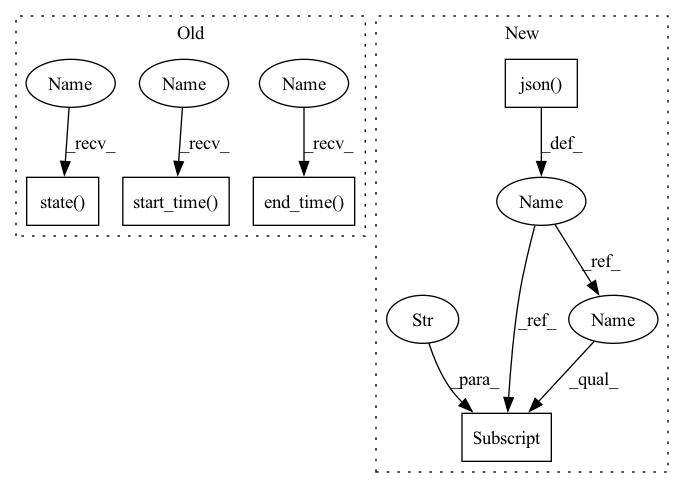

Pattern ID :22332

Before Change
def describe_trial(args: Namespace) -> None:
q = api.GraphQLQuery(args.master)
trial = q.op.trials_by_pk(id=args.trial_id)
trial.end_time()
trial.experiment_id()
trial.hparams()
trial.start_time()
trial.state()
steps = trial.steps(order_by=[gql.steps_order_by(id=gql.order_by.asc)])
steps.metrics()
steps.id()
After Change
else:
r = api.get(args.master, "trials/{}".format(args.trial_id))
trial = r.json()
if args.json:
print(json.dumps(trial, indent=4))
return
// Print information about the trial itself.
headers = [
"Experiment ID",
"State",
"H-Params",
"Start Time",
"End Time",
]
values = [
[
trial["experiment_id"],
trial["state"],
json.dumps(trial["hparams"], indent=4),
render.format_time(trial["start_time"]),
render.format_time(trial["end_time"]),
]
]
render.tabulate_or_csv(headers, values, args.csv)
// Print information about individual steps.
headers = [
"Step //",
"State",
"Start Time",
"End Time",
"Checkpoint",
"Checkpoint UUID",
"Validation",
"Validation Metrics",
]
if args.metrics:
headers.append("Step Metrics")
values = [
[
s["id"],
s["state"],
render.format_time(s["start_time"]),
render.format_time(s["end_time"]),
*format_checkpoint(s["checkpoint"]),
*format_validation(s["validation"]),
*([json.dumps(s["metrics"], indent=4)] if args.metrics else []),
]
for s in trial["steps"]
]
print()
print("Steps:")
In pattern: SUPERPATTERN
Frequency: 3
Non-data size: 5
Instances
Fragment ID: 70469203
Project Name: determined-ai/determined
Commit Name: 612d4658b5657b0e7cce33e468917a1518c3f71d
Time: 2020-05-04
Author: yoni@determined.ai
File Name: cli/determined_cli/trial.py
M Class Name: AnonimousClass
N Class Name: AnonimousClass
M Method Name: describe_trial(1)
N Method Name: describe_trial(1)
M Parent Class:
N Parent Class:
M File Name: cli/determined_cli/trial.py
N File Name: cli/determined_cli/trial.py
M Start Line: 21
M End Line: 89
N Start Line: 20
N End Line: 74
'>
Before Change
raise AssertionError("--best must be a non-negative integer")
limit = args.best
checkpoints = q.op.checkpoints(
where=gql.checkpoints_bool_exp(
step=gql.steps_bool_exp(
trial=gql.trials_bool_exp(
experiment_id=gql.Int_comparison_exp(_eq=args.experiment_id)
)
)
),
order_by=order_by,
limit=limit,
)
checkpoints.end_time()
checkpoints.labels()
checkpoints.resources()
checkpoints.start_time()
checkpoints.state()
checkpoints.step_id()
checkpoints.trial_id()
checkpoints.uuid()
After Change
raise AssertionError("--best must be a non-negative integer")
params["best"] = args.best
r = api.get(
args.master, "experiments/{}/checkpoints".format(args.experiment_id), params=params
).json()
searcher_metric = r["metric_name"]
headers = ["Trial ID", "Step ID", "State", "Validation Metric", "UUID", "Resources", "Size"]
values = [
[
'>
Fragment ID: 70469202
Project Name: determined-ai/determined
Commit Name: 74f0e232f2517fe8f61ea82801753f6a0b6df292
Time: 2020-05-11
Author: yoni@determined.ai
File Name: cli/determined_cli/checkpoint.py
M Class Name: AnonimousClass
N Class Name: AnonimousClass
M Method Name: list(1)
N Method Name: list(1)
M Parent Class:
N Parent Class:
M File Name: cli/determined_cli/checkpoint.py
N File Name: cli/determined_cli/checkpoint.py
M Start Line: 58
M End Line: 113
N Start Line: 57
N End Line: 80
'>
Before Change
@authentication_required
def list_trials(args: Namespace) -> None:
q = api.GraphQLQuery(args.master)
trials = q.op.trials(
order_by=[gql.trials_order_by(id=gql.order_by.asc)],
where=gql.trials_bool_exp(experiment_id=gql.Int_comparison_exp(_eq=args.experiment_id)),
)
trials.id()
trials.state()
trials.hparams()
trials.start_time()
trials.end_time()
trials.steps_aggregate().aggregate.count()
resp = q.send()
After Change
@authentication_required
def list_trials(args: Namespace) -> None:
r = api.get(args.master, "experiments/{}/summary".format(args.experiment_id))
experiment = r.json()
headers = ["Trial ID", "State", "H-Params", "Start Time", "End Time", "// of Steps"]
values = [
[
t["id"],
t["state"],
json.dumps(t["hparams"], indent=4),
render.format_time(t["start_time"]),
render.format_time(t["end_time"]),
t["num_steps"],
]
for t in experiment["trials"]
]
render.tabulate_or_csv(headers, values, args.csv)
'>
Fragment ID: 70469201
Project Name: determined-ai/determined
Commit Name: 91015ac3ed20ca0515253bc99b6329cd11d05d43
Time: 2020-05-11
Author: yoni@determined.ai
File Name: cli/determined_cli/experiment.py
M Class Name: AnonimousClass
N Class Name: AnonimousClass
M Method Name: list_trials(1)
N Method Name: list_trials(1)
M Parent Class:
N Parent Class:
M File Name: cli/determined_cli/experiment.py
N File Name: cli/determined_cli/experiment.py
M Start Line: 683
M End Line: 707
N Start Line: 608
N End Line: 621
'>
Before Change
@authentication_required
def describe_trial(args: Namespace) -> None:
q = api.GraphQLQuery(args.master)
trial = q.op.trials_by_pk(id=args.trial_id)
trial.end_time()
trial.experiment_id()
trial.hparams()
trial.start_time()
trial.state()
steps = trial.steps(order_by=[gql.steps_order_by(id=gql.order_by.asc)])
steps.metrics()
steps.id()
After Change
else:
r = api.get(args.master, "trials/{}".format(args.trial_id))
trial = r.json()
if args.json:
print(json.dumps(trial, indent=4))
return
// Print information about the trial itself.
headers = [
"Experiment ID",
"State",
"H-Params",
"Start Time",
"End Time",
]
values = [
[
trial["experiment_id"],
trial["state"],
json.dumps(trial["hparams"], indent=4),
render.format_time(trial["start_time"]),
render.format_time(trial["end_time"]),
]
]
render.tabulate_or_csv(headers, values, args.csv)
'>
Fragment ID: 70469200
Project Name: determined-ai/determined
Commit Name: 612d4658b5657b0e7cce33e468917a1518c3f71d
Time: 2020-05-04
Author: yoni@determined.ai
File Name: cli/determined_cli/trial.py
M Class Name: AnonimousClass
N Class Name: AnonimousClass
M Method Name: describe_trial(1)
N Method Name: describe_trial(1)
M Parent Class:
N Parent Class:
M File Name: cli/determined_cli/trial.py
N File Name: cli/determined_cli/trial.py
M Start Line: 21
M End Line: 89
N Start Line: 20
N End Line: 74